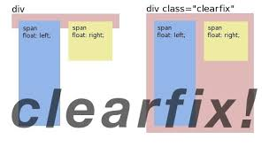

CSS Layout - float and clearfix hack
Without Clearfix
If an element is taller than the element containing it, and it is floated, it will "overflow" outside of its
container:

Fusce luctus vestibulum augue ut aliquet. Mauris ante ligula, facilisis sed
ornare eu, lobortis in odio. Praesent convallis urna a lacus interdum ut hendrerit risus congue. Nunc sagittis
dictum nisi, sed ullamcorper ipsum dignissim ac. Donec ...
Clearfix with overflow: auto;
Let's add a clearfix with overflow: auto; to the containing element, to fix this problem.
Fusce luctus vestibulum augue ut aliquet. Mauris ante ligula, facilisis sed
ornare eu, lobortis in odio. Praesent convallis urna a lacus interdum ut hendrerit risus congue. Nunc sagittis
dictum nisi, sed ullamcorper ipsum dignissim ac. Donec ...
But, the overflow: auto clearfix works well as long as you are able to keep control of your margins and padding
(else you might see scrollbars).
Let's add a clearfix overflow: auto; but changed height and paddings.
Fusce luctus vestibulum augue ut aliquet. Mauris ante ligula, facilisis sed
ornare eu, lobortis in odio. Praesent convallis urna a lacus interdum ut hendrerit risus congue. Nunc sagittis
dictum nisi, sed ullamcorper ipsum dignissim ac. Praesent convallis urna a lacus interdum ut hendrerit risus
congue. Nunc sagittis dictum nisi, sed ullamcorper ipsum dignissim ac. Donec ...
Clearfix hack
The new, modern clearfix hack however, is safer to use, and it's used for most webpages
Let's Add the clearfix hack to the containing element, to fix the problem by modern way:
Without Clearfix
Fusce luctus vestibulum augue ut aliquet. Mauris ante ligula, facilisis sed
ornare eu, lobortis in odio. Praesent convallis urna a lacus interdum ut hendrerit risus congue. Nunc sagittis
dictum nisi, sed ullamcorper ipsum dignissim ac. Praesent convallis urna a lacus interdum ut hendrerit risus
congue. Nunc sagittis dictum nisi, sed ullamcorper ipsum dignissim ac. Donec ...
Add the clearfix hack to the containing element, to fix this problem:
.clearfix::after {
content: "";
clear: both;
display: table;
}
Where the ::after - is a pseudo-element
With Clearfix
Fusce luctus vestibulum augue ut aliquet. Mauris ante ligula, facilisis sed
ornare eu, lobortis in odio. Praesent convallis urna a lacus interdum ut hendrerit risus congue. Nunc sagittis
dictum nisi, sed ullamcorper ipsum dignissim ac. Praesent convallis urna a lacus interdum ut hendrerit risus
congue. Nunc sagittis dictum nisi, sed ullamcorper ipsum dignissim ac. Donec ...
In general, the essence of the 'clearfix' can be explained by one picture:
Here, it was created a separate div with class clearfix where we put span with float left and second span with
float right
